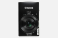

器材
党
全部器材
产品年表
名词百科
榜单
器材库
> 不可换镜头数码相机 > IXUS 180

佳能
IXUS 180
分类
不可换镜头数码相机
点评
0 条
图片
0 张
评测
0 篇
IXUS 180搭载了约2000万有效像素CCD，10倍光学变焦与24mm广角镜头，结合NFC近场通信与Wi-Fi®无线传输功能，轻松捕捉远近风景，实现即时拍摄与分享。
产品类型
不可换镜头数码相机
综合评分
暂无评分
无忌评测
暂无评测
规格参数
网友点评
(0)
产品图 / 样片
(0)
评测文章
(0)
规格总览
发布日期
2016-01-06
影像规格
影像传感器
CCD
影像传感器尺寸
1/2.3英寸
总像素
约2050万
有效像素
约2000万
影像处理器
DIGIC 4+
静态图像尺寸
大：5152×3864中1：3648×2736中2：2048×1536小：640×480
静态图像格式
JPEG
画幅比
4:3
短片尺寸
1280×720640×480
短片格式
MOV
防抖系统
IS光学影像稳定器
镜头和对焦
焦距
4.3mm-43mm
等效35mm画幅焦距
24mm-240mm
最大光圈
f/3.0-6.9
光学变焦
10倍
最近对焦距离
广角1cm, 长焦100cm, 微距1cm
曝光控制
快门速度
15-1/2000秒
ISO感光度
自动，ISO 100-ISO 1600以1级增减
白平衡
自动/日光/阴天/白炽灯/荧光灯/荧光灯H/用户自定义模式
连拍
约0.8张/秒（自动、P模式）约2.2张/秒（低光照模式）
拍摄模式
自动/P程序/人像/面部优先自拍/低光照/鱼眼效果/微缩景观效果/玩具相机效果/单色/极鲜艳色彩/海报效果/焰火/慢速快门•通过短片按钮拍摄短片。
取景规格
LCD尺寸
2.7英寸
LCD像素
约23万
文件输入/输出
存储卡
SD/SDHC, SDXC
数据接口
USB2.0
视频/音频接口
AV 输出
无线功能
Wi-Fi, NFC
支持打印协议
PictBridge
电源
电池
可充电锂离子电池
外观
颜色
黑色, 红色, 蓝色
尺寸
95.3×56.8×23.6mm
重量
仅机身约123g / 包括电池和存储卡约138g
其它
附件
电源线，电池充电器CB-2LFC，锂离子充电电池NB-11L，腕带
该产品暂无存档的网友点评
该产品暂无存档的产品图
评测 / 相关文章
该产品暂无存档的评测文章
相关文章
［资讯］佳能发布PowerShot、IXUS五款数码相机
（原站已下线）